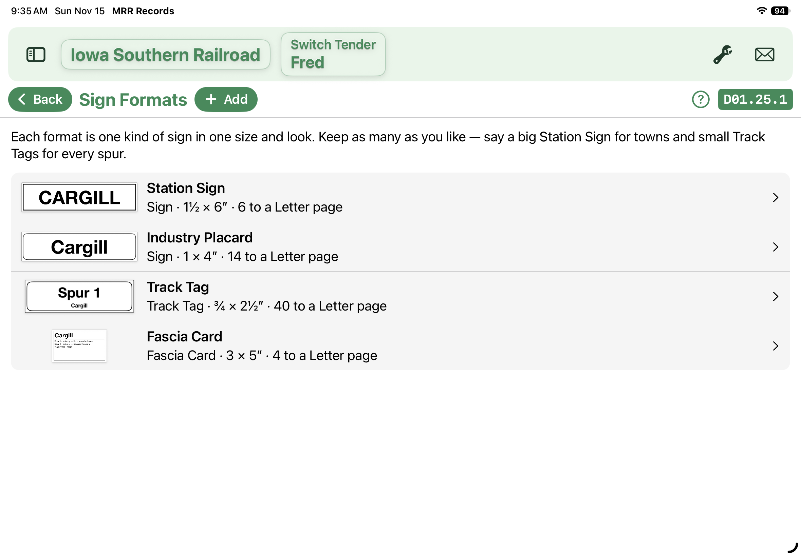
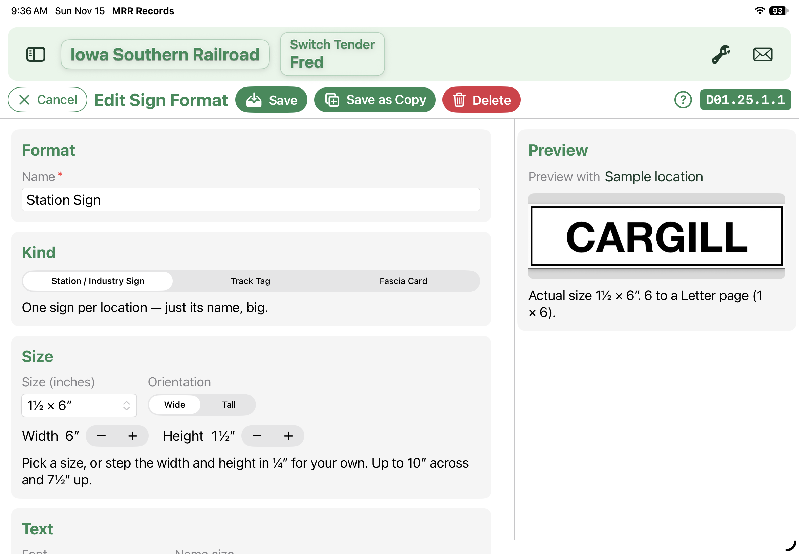
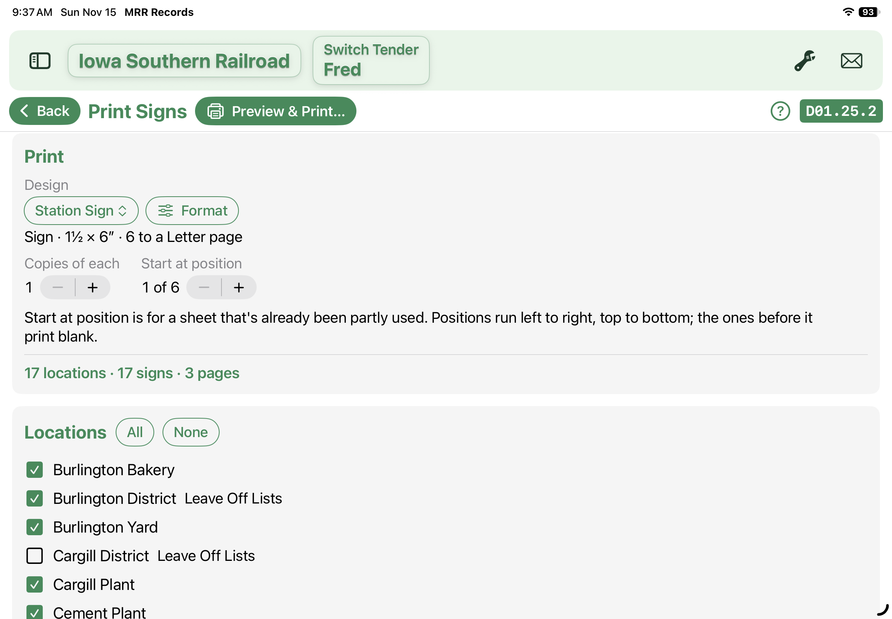

Signs for your layout, straight from your Locations
Version 2.8 adds Signs, in Settings → Your Railroad. It turns the Locations you've already entered into printed signs, so nothing gets typed twice.
Four kinds of sign

- Station Sign and Industry Placard: one per location, showing its name, with the location type underneath if you want it.
- Track Tag: one per track. You can add the location name, track type, length, and description.
- Fascia Card: the location name with a list of its tracks, plus each track's type, length, and description if you like.
Each kind comes as a ready-made design you can copy and change. Save as many designs as you want.
Sizes

Pick a preset (sizes in inches, tall × wide): 1 × 4, 1½ × 6, 2 × 8, 3 × 10, 3 × 5, 4 × 6, or ¾ × 2½. You can also set a custom size in quarter-inch steps, up to 7½ inches tall by 10 wide.
The look
- Font: Helvetica Neue, a condensed font, Georgia, or Menlo. Bold and ALL CAPS are optional.
- Text size: let the text fill the sign, or set a fixed size.
- Border: none, thin, or thick, with square or rounded corners.
- White on black for a classic station-sign look.
- Cut lines to guide your scissors.
A live preview updates as you change each setting.
Printing

Pick a design, tick the locations you want, and choose how many copies of each. Locations marked Leave Off Lists start unticked. If you have a half-used sheet, tell the app where to start. Preview the first page, then print or save as a PDF.